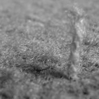

Figure 1: Even the carpet-like Carpetorium Pratensis requires mowing.

Figure 2: Creeping Bentgrass is best suited for outdoor use and should be avoided by the indoor farmer.
A selection of indoor sod options: reviewed and tested by CosmoFarmer.com in our state-of-the-art “Apartment Laboratory” on 5th Avenue.
Figure 1: Even the carpet-like Carpetorium Pratensis requires mowing.
Figure 2: Creeping Bentgrass is best suited for outdoor use and should be avoided by the indoor farmer.

Figure 3: This indoor-hybrid of Kentucky Bluegrass has fallen out of fashion.

Figure 4: Tinea Pedis Poaceae threatens discomfort to bare feet.

Figure 5: The difficult to maintain pattern of this indoor lawn is a sight to behold.

Figure 6: The dandelion: scourge of the apartment farmer.